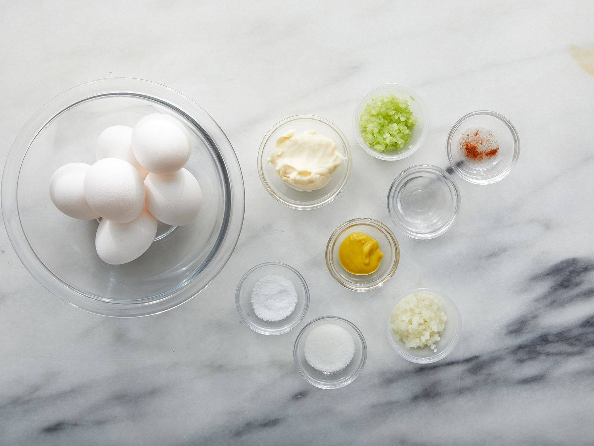

Home
Deviled Eggs

Description
These deviled eggs are delicious and always popular at our holiday parties. This recipe adds diced onion and celery to the creamy mayonnaise filling for a little more texture.
Ingredients
- Eggs: This recipe yields 12 deviled egg halves, so you’ll need six boiled eggs.
- Mayonnaise: Mayonnaise makes the filling extra creamy.
- Sugar: A teaspoon of white sugar lends a hint of sweetness.
- Vinegar: A teaspoon of white vinegar, meanwhile, cuts the sweetness with acidity.
- Mustard: Use store-bought prepared mustard or homemade yellow mustard.
- Vegetables: You’ll need an onion and celery.
- Seasonings: These deviled eggs are seasoned with salt and paprika.
Steps
- Cut the boiled eggs in half and remove the yolks. Reserve the whites.
- Mash the yolks with a fork and add the remaining ingredients.
- Stuff or pipe the filling into the egg white halves.